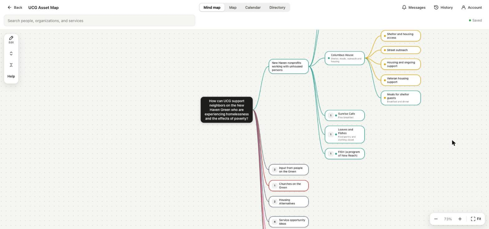
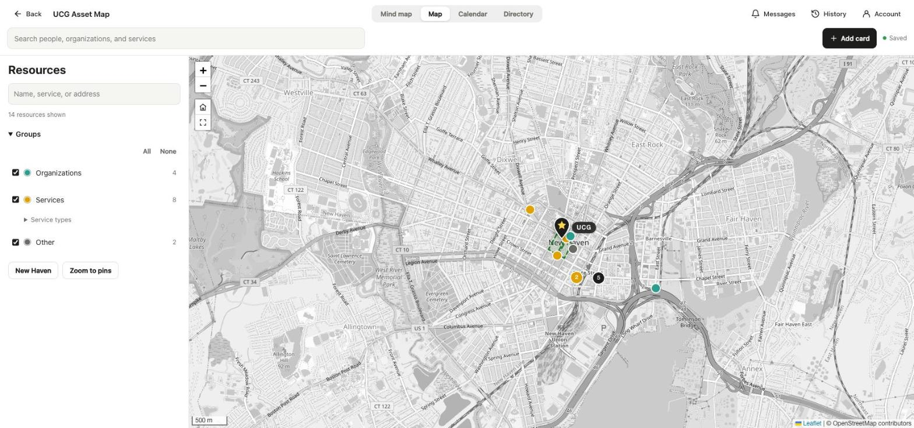
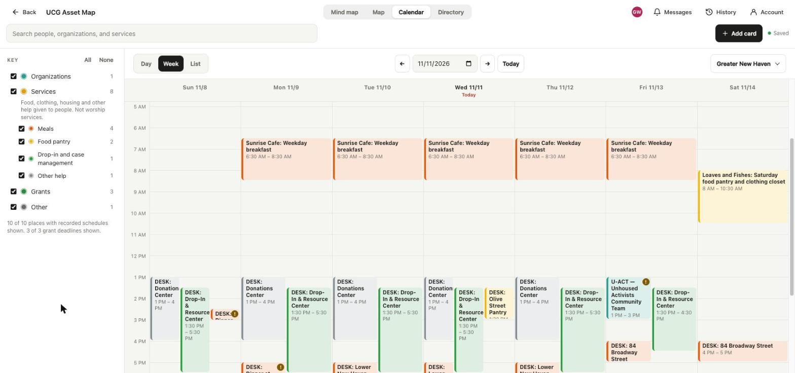
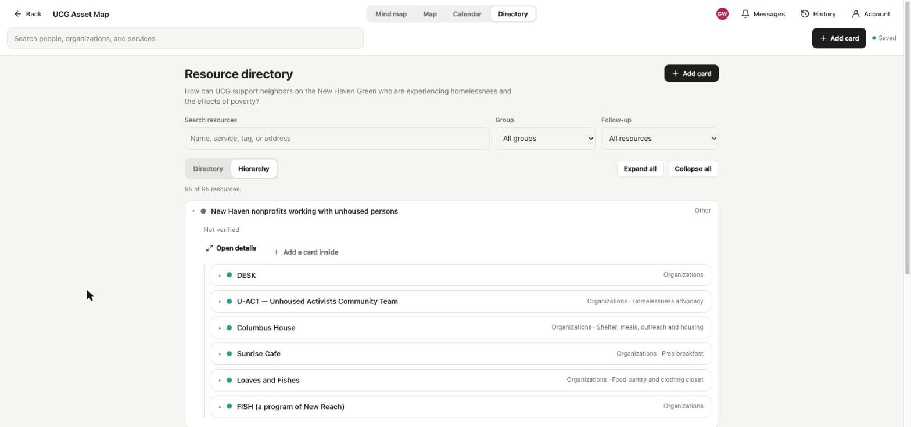

UCG Asset Map
A shared workspace for United Church on the Green, built around one question: how can the church support neighbors on the New Haven Green who are experiencing homelessness and the effects of poverty? The team records every organization, service and idea as a card, and the same cards show up in four views: a mind map for thinking, a street map for where things are, a calendar for when they are open, and a directory for looking things up.
Everyone edits the same map at once. The map is a Yjs document synced over WebSockets, so two people can type in the same card, and edits made during a dropped connection stay on the device and are sent again when it returns. Every save is kept in a version history. Accounts are created with an invite code, and nothing is visible without signing in.
A Node server with a vanilla JS front end, bundled with esbuild and hosted on Fly.io. Every push to main is tested and deployed automatically.



